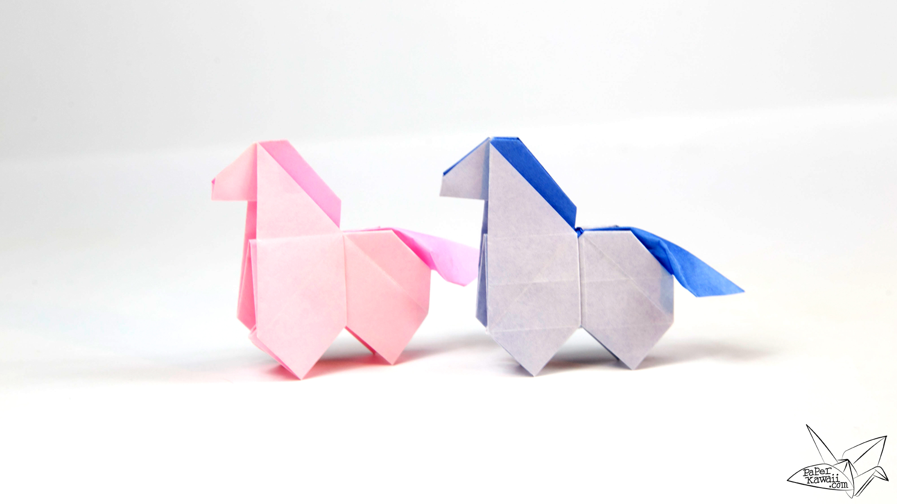
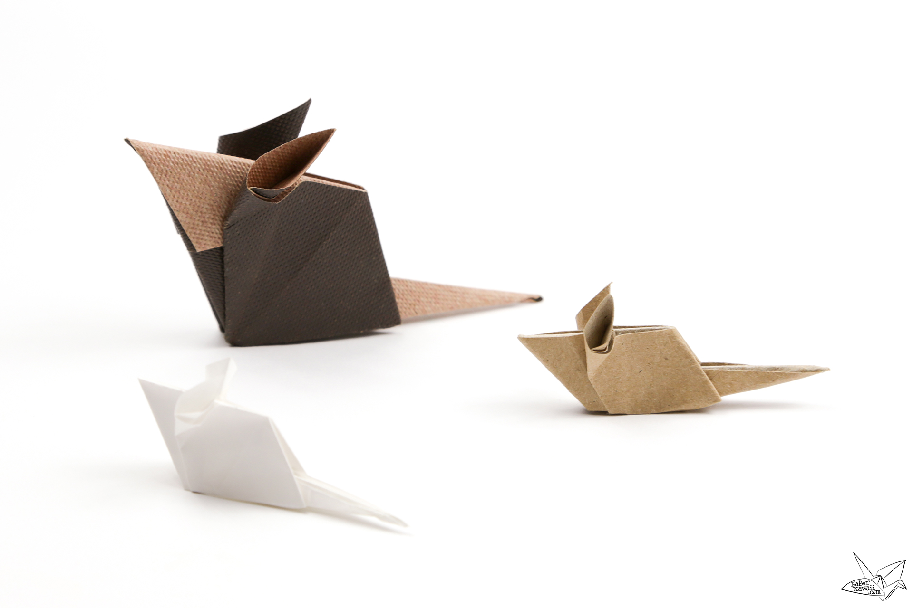
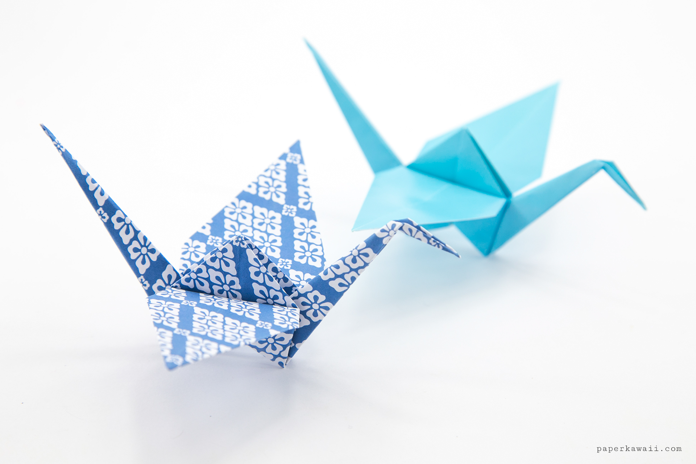

Bunny
- Rabbits and bunnies are the same animal.
- They are the cutest animals on Earth

Pony
- Ponies have thicker manes and tails than horses.
- Well trained ponies are good for childrenfor riding

Horse
- Horses have bigger eyes than any other mammal that lives on land.
- A 19th century horse 'Old Billy' is said to have lived 96 years

Mouse
- Despite their tiny bodies, mice eat between 15 and 20 times a day.
- Mice are good jumpers, climbers and swimmers.

Crane
- They have long necks and beaks.
- Can be found in all continents excpet South America and Antarctica.

Reindeer
- Both the males and females grow antlers.
- They have the ability to survive a blizzard.